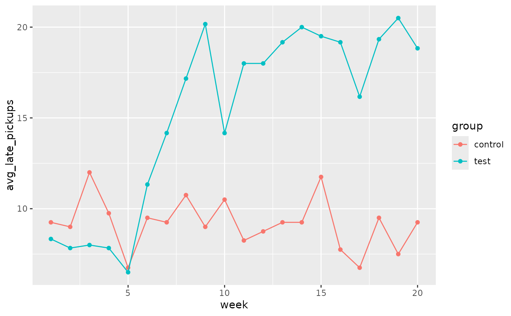

Researchers tested the deterrence hypothesis which predicts that the introduction of a penalty will reduce the occurrence of the behavior subject to the fine, with the condition that the fine leaves everything else unchanged by instituting a fine for late pickup at daycare centers. For this study, they worked with 10 volunteer daycare centers that did not originally impose a fine to parents for picking up their kids late. They randomly selected 6 of these daycare centers and instituted a monetary fine (of a considerable amount) for picking up children late and then removed it. In the remaining 4 daycare centers no fine was introduced. The study period was divided into four: before the fine (weeks 1–4), the first 4 weeks with the fine (weeks 5-8), the entire period with the fine (weeks 5–16), and the after fine period (weeks 17-20). Throughout the study, the number of kids who were picked up late was recorded each week for each daycare. The study found that the number of late-coming parents increased significantly when the fine was introduced, and no reduction occurred after the fine was removed.
Format
A data frame with 200 observations on the following 7 variables.
- center
Daycare center id.
- group
Study group:
test(fine instituted) orcontrol(no fine).- children
Number of children at daycare center.
- week
Week of study.
- late_pickups
Number of late pickups for a given week and daycare center.
- study_period_4
Period of study, divided into 4 periods:
before fine,first 4 weeks with fine,last 8 weeks with fine,after fine- study_period_3
Period of study, divided into 4 periods:
before fine,with fine,after fine
Source
Gneezy, Uri, and Aldo Rustichini. "A fine is a price." The Journal of Legal Studies 29, no. 1 (2000): 1-17.
Examples
library(dplyr)
library(tidyr)
library(ggplot2)
# The following tables roughly match results presented in Table 2 of the source article
# The results are only off by rounding for some of the weeks
daycare_fines %>%
group_by(center, study_period_4) %>%
summarise(avg_late_pickups = mean(late_pickups), .groups = "drop") %>%
pivot_wider(names_from = study_period_4, values_from = avg_late_pickups)
#> # A tibble: 10 × 5
#> center `before fine` `first 4 weeks with fine` `last 8 weeks wi… `after fine`
#> <int> <dbl> <dbl> <dbl> <dbl>
#> 1 1 7.25 9.5 14.1 15.2
#> 2 2 5.25 9 13.9 13.2
#> 3 3 8.5 10.2 20.1 22
#> 4 4 9 15 21.2 20.2
#> 5 5 11.8 20 27 29.5
#> 6 6 6.25 10 14.8 12
#> 7 7 8.75 8 6.88 6.75
#> 8 8 13.2 10.5 11.1 9.25
#> 9 9 4.75 5.5 5.62 4.75
#> 10 10 13.2 12.2 13.6 12.2
daycare_fines %>%
group_by(center, study_period_3) %>%
summarise(avg_late_pickups = mean(late_pickups), .groups = "drop") %>%
pivot_wider(names_from = study_period_3, values_from = avg_late_pickups)
#> # A tibble: 10 × 4
#> center `before fine` `with fine` `after fine`
#> <int> <dbl> <dbl> <dbl>
#> 1 1 7.25 12.6 15.2
#> 2 2 5.25 12.2 13.2
#> 3 3 8.5 16.8 22
#> 4 4 9 19.2 20.2
#> 5 5 11.8 24.7 29.5
#> 6 6 6.25 13.2 12
#> 7 7 8.75 7.25 6.75
#> 8 8 13.2 10.9 9.25
#> 9 9 4.75 5.58 4.75
#> 10 10 13.2 13.2 12.2
# The following plot matches Figure 1 of the source article
daycare_fines %>%
group_by(week, group) %>%
summarise(avg_late_pickups = mean(late_pickups), .groups = "drop") %>%
ggplot(aes(x = week, y = avg_late_pickups, group = group, color = group)) +
geom_point() +
geom_line()
